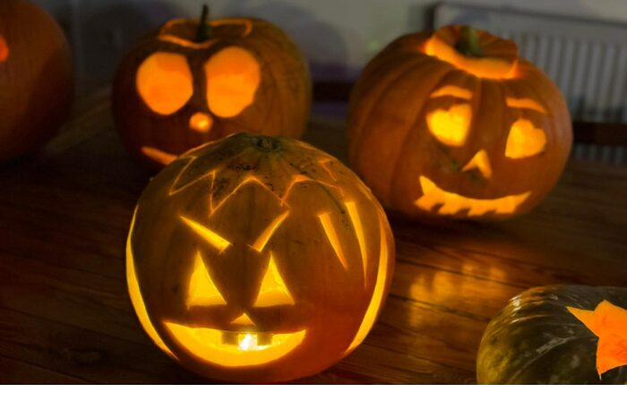
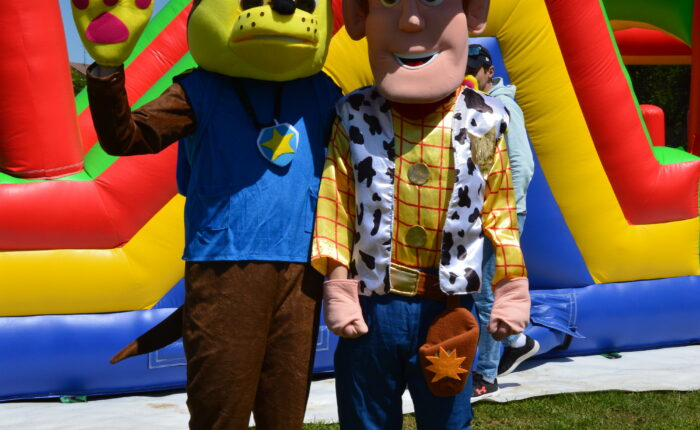

Staré dobré časy, nový komfort
Rodinná stodola s dušou — priestory, kuchyňa a galéria na jednom mieste.
Miesto, kde sa spomienky rodia
Stodola Staré časy je rustikálny priestor s dušou, kde sa snúbi šarm starých čias s moderným pohodlím. Sme rodinný podnik — a tak k vám aj pristupujeme: osobne, srdečne a s dôrazom na detail.
Varíme vo vlastnej kuchyni z čerstvých surovín od lokálnych dodávateľov. Pre vašu akciu zabezpečíme všetko pod jednou strechou — jedlo, výzdobu, obsluhu aj cake bar. Vy si tak môžete naplno užiť svoj deň.
- Vlastná kuchyňa a menu na mieru
- Kapacita 80 hostí v sále + 30 v salóniku
- Obrad na lúke, dvor, terasa aj detské ihrisko
- Parkovanie priamo pri objekte, 20 km od Košíc

Priestor pre malé aj veľké oslavy
Transparentne — viete vopred, s čím počítať.
Hlavná sála
Priestranná sála s tanečným parketom a vlastným pódiom pre kapelu či DJ.
Salónik
Komornejší priestor ako stvorený pre menšie rodinné oslavy a posedenia.
Exteriér & lúka
Dvor s altánkami, krytá terasa, detské ihrisko a lúka na svadobný obrad.
Pozrite sa, ako to u nás žije



